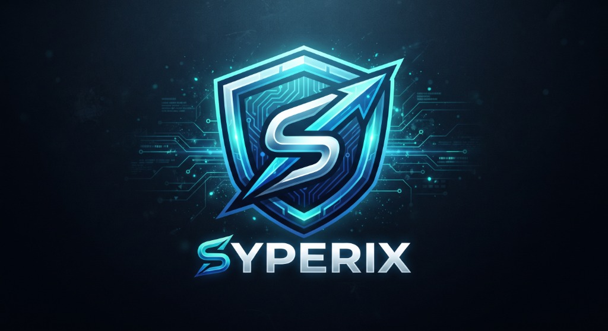

SİSTEM BAŞLATILIYORSavunma sistemleri, tarım teknolojileri ve yapay zeka alanında yenilikçi Ar-Ge projeleri geliştiren bağımsız teknoloji takımı.
Syperix, 2025 yılında kurulan, savunma teknolojileri, tarım inovasyonu ve yapay zeka alanlarında özgün Ar-Ge projeleri geliştiren bağımsız bir teknoloji takımıdır.
Genç ve dinamik ekibimizle, Türkiye'nin teknolojik geleceğine katkı sağlamak amacıyla çalışıyoruz. Hava savunma sistemlerinden akıllı tarım çözümlerine, optik teknolojilerden otonom yazılım platformlarına kadar geniş bir yelpazede projeler üretiyoruz.
Amacımız sadece teknoloji üretmek değil; ürettiğimiz teknolojiyle gerçek dünya problemlerine çözüm sunmak ve ülkemizin savunma ile tarım sektörlerine somut değer katmaktır.
Hava savunma ve optik sistemler geliştiriyoruz.
Akıllı tarım çözümleri ve yapay zeka entegrasyonu.
Otonom sistemler ve akıllı karar destek mekanizmaları.
Syperix'i oluşturan tutkulu mühendisler.
Şu anda aktif olarak üzerinde çalıştığımız projeler.
Hava savunma odaklı ileri teknoloji projesi. Düşman hava araçlarına karşı etkili ve maliyet-verimli savunma çözümleri geliştirmeyi hedefliyor. Optik algılama, otonom takip ve nötralize etme sistemlerini kapsamaktadır.
Yapay Zeka Destekli Otonom Tarım Sistemi. Tarımsal verimliliği artırmak için yapay zeka ve otonom teknolojileri birleştiren kapsamlı bir platform. Bitki sağlığı analizi, sulama optimizasyonu ve hasat zamanı tahminleri gibi modüller içermektedir.
Geleceğin teknolojilerini bugünden araştırıyoruz.
Kubbe tipi hava savunma sistemlerine karşı geliştirilen ileri füze teknolojisi. Yüksek manevra kabiliyeti ve hassas güdüm sistemi ile donatılmış savunma çözümü.
Optik algılama ve lazer teknolojileri kullanarak düşman İHA'larını tespit eden ve etkisiz hale getiren savunma sistemi. Elektro-optik sensör füzyonu ile çalışır.
YZDOSS platformuna entegre edilecek yapay zeka modülü. Bitki hastalık tespiti, verim tahmini ve otomatik ilaçlama kararları için geliştirilmektedir.
Çiftçilere sahada anlık bilgi sunan akıllı gözlük sistemi. Bitki sağlığı analizi, sulama önerileri ve hasat zamanı bilgilerini artırılmış gerçeklik ile görselleştirir.
Gök Siper projesine entegre edilecek kablosuz enerji transfer modülü. Optik ışın teknolojisi kullanarak uzaktan şarj ve enerji besleme kapasitesi sağlamayı hedefler.
Tarımfest yarışmasında Türkiye genelinde 3. sırayı elde ederek büyük bir başarıya imza attık. YZDOSS projemiz jüri tarafından takdir edilerek dereceye girdi.
Syperix takımı savunma teknolojileri, tarım inovasyonu ve yapay zeka alanlarında çalışmak üzere kuruldu. Vizyonumuzla yola çıktık.
Projelerimize destek veren değerli kurum ve kuruluşlar.
Sponsorumuz veya destekçimiz olmak ister misiniz?
Bize Ulaşınİş birliği, sponsorluk veya genel sorularınız için bizimle iletişime geçin.
Bizi Instagram'da Takip Edin
Projelerimiz, perde arkası görüntüleri ve güncellemeler için sosyal medya hesabımızı takip edin.
@syperix_tr